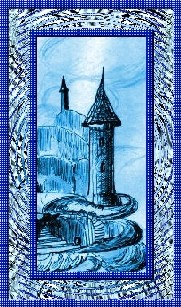
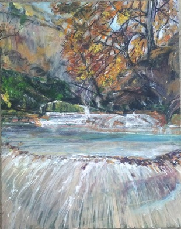
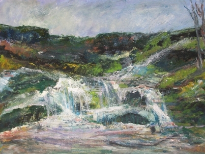
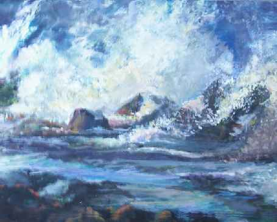
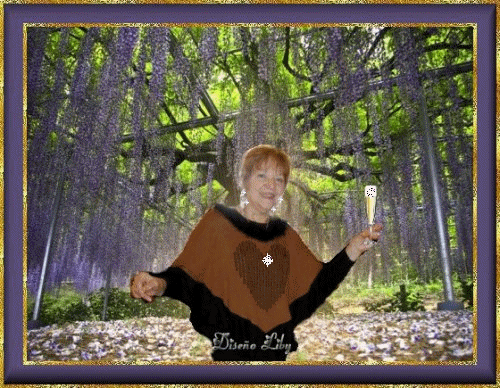
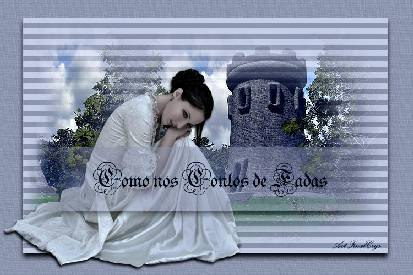
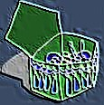
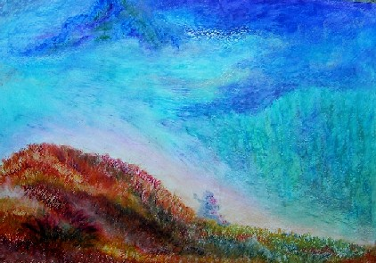
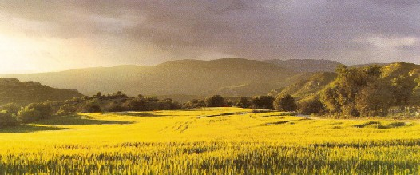
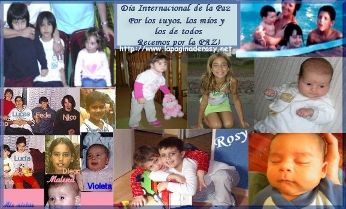

La torre azul
La torre azul
¿Dónde irá el que sueña
a soñar? ¿Dónde beberé el agua y saciaré
mis ansias? ¿Dónde irás poeta, para que te
escuchen? y las manos apretadas en el bollo blanco, ¿Dónde irá el que sueña a soñar?... Autor: Graciela María Casartelli |
 |
"Abrazo inesperado".... de Graciela María Casartelli y de Any Carmona (Cauce Herido)
Abrazo inesperado
 "Abrazo inesperado", poema y pintura de Graciela María Casartelli. Acrílico sobre bastidor, 40 x 50 cm. |
CAUCE HERIDO Fluye el agua entre las rocas Fuiste tú con tus pensamientos, Las voces del río cantan. Y bajo el árbol,
Autor: Any Carmona, Argentina, |
Todo el Mediterráneo |
Los contenedores se apilan coloreando la playa portuaria y la grúa enmudecida sospechando que ha sido traicionada erguida sobre sí misma calla. A "la hora en que el sol la siesta dora" la teletipo enmudece y el pájaro velozmente esquiva la pedrada. (C) JOSE PIVIN – HAIFA, ISRAEL
|
|
|
 "Misterio de la abundancia I" Pintura en acrílico de Graciela María Casartelli |
A mi entrañable AMIGA : Sra. Graciela María Casartelli.
Blancas palomas Leona herida Corazón de poetisa, Las escarchas del tiempo Tu alma, Autor: VICENTE AIELLO (Argentina) |
Y amanecerá la torre Cris Carbone |
Creo en ti, amigo... Verónica .A. Díaz
"MISS VERY"
|
SUEÑO DE AMOR
Quisiera penetrar amor Cada noche en tus sueños Para seducirte cariño Con mis sueños en tus sueños Para hacer de ese sueño Un único sueño de amor Quisiera seducirte amada Con cada uno de mis versos Con cada estrofa, con cada palabra del verbo amar Para que sientas Las caricias de mis versos Poder recorrer con cada letra, con cada palabra Cada uno de tus pensamientos Y perderme en tus deseos Para entregarte la alegría Y cariño de mi poesia Que sientas la alegría De sentir mi sueño en tu sueño Para poder conjugar en ti el verbo amar Hacer nacer en ti la necesidad de mi amor Para crear en ti la necesidad de mi deseo Que mi deseo sea parte de tu deseo En esta noche de tus sueños en mi sueño Contemplarás las estrellas y los astros en el cielo La luna te bañará y recorrerá tu cuerpo
|
Y se deleitará de tu hermosura Entonces yo seré feliz, porque tú serás Parte de mi sueño en tu sueño Las estrellas brillarán en el cielo Los grillos cantarán de alegría Porque tu estarás en mis sueños Y yo seré parte de tu sueño Será una noche de sueños y de pasión Una noche de alegría y de amor Si me permites amada Entrar en tus sueños, te podré alcanzar Sin importar la distancia que nos separa Viajaré a tu encuentro Como un cometa a tus sueños Para poder ser parte de tus sueños Te despertaré, amada Con un beso en cada mañana El sol penetrará por tu ventana Y los pájaros cantarán de alegría.
Autor: Jaime Correa/Chile http://youtu.be/fhKF5C4Qg6w |
. . .
 "Mar bravío" Pintura en acrílico de Graciela María Casartelli- 30 x 40 cm |
LA HORA
Ni la torpeza ni la tropelía podrán arremeter contra lo bello. Tu beso seguirá en mi boca, el tiempo volará su curso aunque mis brazos no abracen tu cintura ni tus ojos indaguen en el ancho páramo de mi ser. Sacié mi sed un instante, sólo un eterno instante, sintiéndome flor y tierra, semilla y piel. La hora entre nosotros, la fusión de la voluntad perenne con el secreto brumoso de una persistencia basada en el cansancio de la oquedad, diluyendo como espuma el candado de tus noches. Fui poseedor de la llave que a mi mano diste. Permanecí en la puerta, un pájaro anunciaba la llegada del alba. A lo lejos, la metralla alumbró el horizonte de nuestro amanecer.
Autor: © Alberto Peyrano, 2010 Buenos Aires, Argentina
|
|---|
EN LA SOLEDAD
En la soledad ... pienso sufro, siento... sueño. En la soledad... escucho la voz del silencio. En la soledad... veo como pasa el tiempo. En la soledad ... quiero esconder los miedos, trazarme metas y desarrollar mi ingenio. En la soledad... pretendo dejar de pensar en lo que no tengo. Y dar gracias a DIOS por brindarme ¡Tanto! aún sin merecerlo. En la soledad... aparecen los signos del contentamiento. y en mi alma estallan risas dormidas adentro. Y me siento feliz de reconocerlo. Que mi mundo es este y hoy es mi tiempo. Nací con un propósito y esperanza tengo que he de realizarlo en cualquier momento. El sol se ha de ocultar y he de ver solo un reflejo detrás de las montañas de mis sueños muertos. ¿Para que he de esperar que se acabe este invierno? Si ya huelo a glicinas en medio del desierto. La noche sobrevendrá cuando estén todos durmiendo y yo renaceré con los ojos abiertos a este mundo "filosófico" que ni yo misma entiendo. Donde el blanco es negro y lo malo es bueno. Donde el si es quizás y la verdad un entuerto. Allí comprenderé de DIOS el acierto al darme la FE Como único "armamento" para gritar al mundo que en él solo creo... Pues a las palabras del hombre se las lleva el viento. EN LA SOLEDAD... allí cuando mi espíritu hace silencio. pienso, siento, sueño que no todo se perdió Y BRINDO POR MIS SENTIMIENTOS. |

Libia Beatriz Carciofetti // Argentina http://www.facebook.com/?tid=1243760591784&sk=messages#!/profile.php?id=1274022681 (( MIS POEMARIOS))
http://www.poemasromancesyamor.com/htmlpages/poetas/libia/libia.htm http://elrincondelpoeta.net/liby.htm http://elrincondelpoeta.net/forox/viewtopic.php?t=5326 http://www.locurapoetica.com/libia/libia.htm /index.hthttp://es.geocities.com/poesiasdelcorazon2002ml http://ar.geocities.com/libycarciofetti/ |
AMOR MIO ....
Qué paisajes fuiste a buscar...? Hacia dónde se escaparon tus sueños...? Hacia qué horizonte estarás mirando...? Qué ruta decidiste recorrer...? Hacia qué lugar maravilloso te has ido ...? En qué nube te has subido...? Desde qué lugar verás el arco iris...? Qué par de ojos miras frente a ti...? Qué par de manos se extienden para acariciarte...?
No tengo respuestas..., ante estas preguntas. Sólo sé que para mirarte debo cerrar mis ojos...
Sólo sé que el par de ojos y manos que están siempre frente a ti, son las de DIOS. Autor: Marta Cabrera-Quil (Buenos
Aires, Argentina) |
 Pintura de Dolores Martina Meral (México) |
Como nos Contos de Fadas
Você chegou e não percebi. Que bela floresta eu via do gramado onde estava! Distraída em pensamentos, com tanto amor represado sem saber onde colocá-lo! Olhando ao redor, vários casais de namorados abraçados... Questionava, quando o encontrarei? Por um instante tudo ficou diferente... Abriu-se um caminho pelas árvores, e lá estava ele... Um lindo cavaleiro em seu corcel branco, a me chamar, chamar!... Fui correndo ao seu encontro. Daí tive a certeza, era meu grande amor, que tanto busquei!... O cavaleiro me colocou sobre seu cavalo e cavalgamos nosso sonho de amor!... Ligia Tomarchio http://www.ligia.tomarchio.nom.br/ Todos os Direitos Autorais reservados nos termos da Lei n. 9610 de 1998 |
 |
"Atardecer serrano" pintura de María Beatriz Pombo |
¡Te extraño tanto! Mi mirada se pierde en las esquinas MARIA BEATRIZ POMBO |
|
Decir a voces mi amor ¡AMO A LA VIDA! MAYRó Autor: Mayra Romero |
Tal vez todo lo que escribo, Oscar Omar Sortino E-Mail: peyote50@gmail.com
|
 |
Ella recoge basuras, las selecciona las elige por texturas, por sabores, las coge entre sus dedos, las palpa, las huele y se sonríe. Ella cabalga en el frío del silencio y día a día vive escarbando vertederos. Ella repta por las calles, repta y se hace invisible para el mundo. ella va difusa, llana, marcial, sin voz y camina bajo el manto de la soledad.
Escudriña y de su pelo enmarañado cuelgan los jirones de un blondo ayer. Mira con sus ojos de esmeralda y el alma parece rugir entre sus dedos cuando el destello de un mendrugo se hace golosina, delicioso manjar en su boca desdentada, Ella, la de los ojos esmeralda y de los dorados rizos de un ayer camina desmadejada, leonada y sus manos como garfios se aferran a los potes de basura.
|
A su lado, el niño, de jirones vestido, esqueleto de nuestras ambiciones le mira embobado y comparten en silencio y con gran alegría el alimento por otros eliminados, Y en este actuar no hay pena ni llanto y los veo saltar de charco en charco reflejados en las laminas de existencia, en los siglos de la humanidad y me dejan, aun a pesar de todo, ese pincelazo de destello de subsistencia, de dolores esparcidos sin chistar, de pálidos rugidos estomacales, de aquellas cicatrices nunca cerradas. Y me dejan roto el espejo de la vida. Y me dejan estéril de palabras. Y me dejan gimiendo mi espiritual invalidez y, la vez me dejan, la fuerza de sus huesos, los siglos anclados a sus talones, el proyecto de sonrisa de un pequeño. Y yo me muero, y yo me lloro y yo me retuerzo en el monótono caminar y cuando el pan blanco llega a mis labios simplemente sale de mi boca culpable "Padre Nuestro ….."
María Cristina Aliaga Luna © CHILE- 6.07.2007 |
 |
(Puerto Rico) |
Voy
Voy a la cima de mi castillo azul hoy, Y entre pájaros que apagan su canto, Voy donde puedo pintar lo que siento Voy a la cima de la torre azul, Voy a lo alto; aunque mi ser sienta temblar
A.B. Alty-Gaviota Del Alba |
VENDRAS...
Te espero cuando el abismo de la noche
Cuando mis pensamientos borrascosos
Te espero en el sendero blando del silencio,
Nancy Griffa |
 Pintura con pasteles al óleo de Mirta Beatriz Campos (Mendiolaza, Córdoba, Argentina) |
ALLÍ
Allí donde todo lo puedo Allí donde nada ni nadie |
. . .
|
Tú me retienes; no me dejas. Perteneces, aunque no lo comprendas Quiero volver a presenciar Tu opacidad me impide ver, tal como quisiera, Él me ayuda a ser... ¡Amante de su existencia!
|
|
A veces soy río calmo, Quiero ser infinidades de cosas....
|
. . .
Otro sueño
|
. . .
Carlos R. Lemberg E-mail:carlosroberto@intertower.com.br |
Como é forte o poder da oração Com Ele teremos a benção Assim poderemos ter a felicidade E no Mundo Paz e Fraternidade |
Como es fuerte el poder de la oración Con Él tendremos a bendición Así podremos tener la dicha Y en el Mundo Paz y Fraternidad |
. . .
REBELDIA
Luiz Gilberto de Barros |
|
Tu amor no recusa Tu mirada va a la busca Garabateas tus ansias Pero cuando la melancolía Luiz Poeta |
E-mail: luizpoeta1@oi.com.br |
. . .
¡Si tú estuvieras!
Aquí a mi lado ahora; A tu oído susurrara; Hacerte el amor llegara; Mis manos te acariciaran; Si a mi lado te tuviera, Hasta que al fin comprendieras; Te extraño... Gloria Camacho (Colombia) |
 El valle de Josefina Algar - Campo de cereal -Foradada.
Cap al tard ambSant Mamet i el Montsec- en cercanías de su ciudad,
Tamarite de Litera -España- |
AMIGO
|
. . .
. . .
Contarte …
Te escribo, un día de tantas, pensando en ti Sólo para contarte, como lo hacia cada día en ese ayer en ese hoy, en donde nos une el sentimiento y la comunicación de la palabra y el latir de nuestros corazones. Contarte: Que el corazón me late apresuradamente como un corcel desbocado en busca de su libertad como una niña cuando ve y siente al ser que más ama Contarte: Que existe un nuevo día, y que con el despertar se hace más hermoso.. Contarte: Silvana María Bixio (Argentina) |
. . .
MIS AMIGOS DEL NUEVO MUNDO…
Están lejos, Esos amigos sobre la Internet les he elegido; Para amigos jamás ordinarios, Para Ustedes, mis nuevos amigos de las Antípodas; Yo, los he querido Latinos para aprender su
idioma, Es verdad que no conozco sus rostros Entre nosotros, nuestra edad nos galana, son
regalos del tiempo. Algunas de Ustedes son como madres para mí,
siempre a mi lado; Compartimos risas y penas Ustedes me llevan una cierta forma de amor
tierno, A todos Ustedes que me han acogido,
Françoise Marie BERNARD (Francia) |
 Regalo de Rosy para el "Día
internacional de la Paz" 2007. |